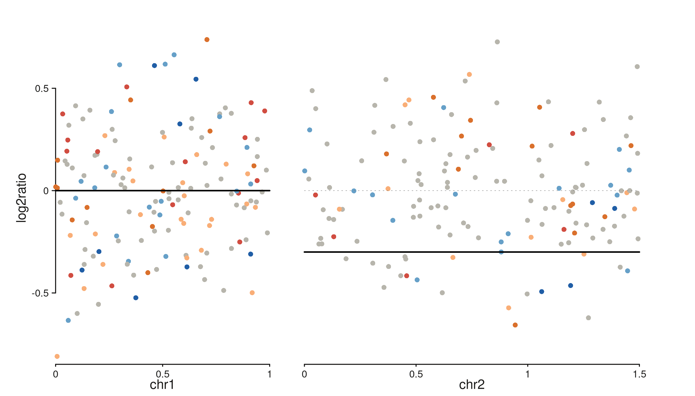
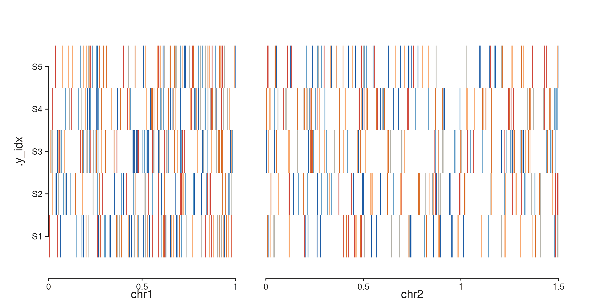
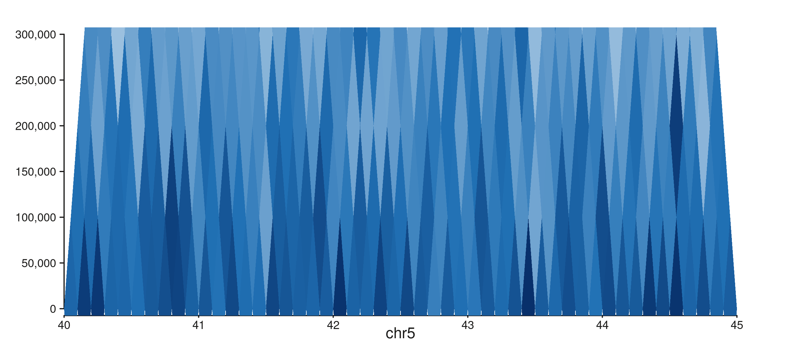
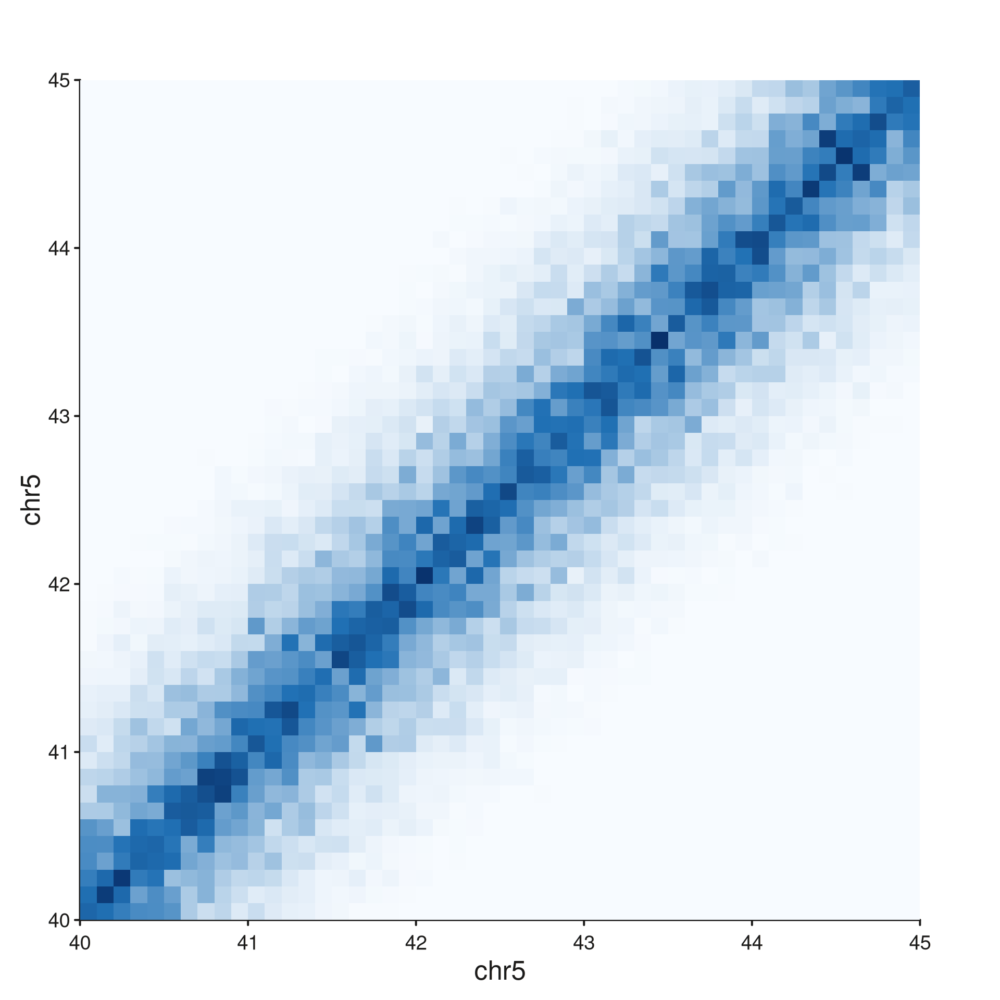
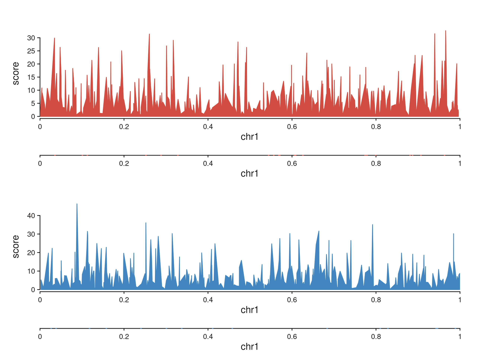
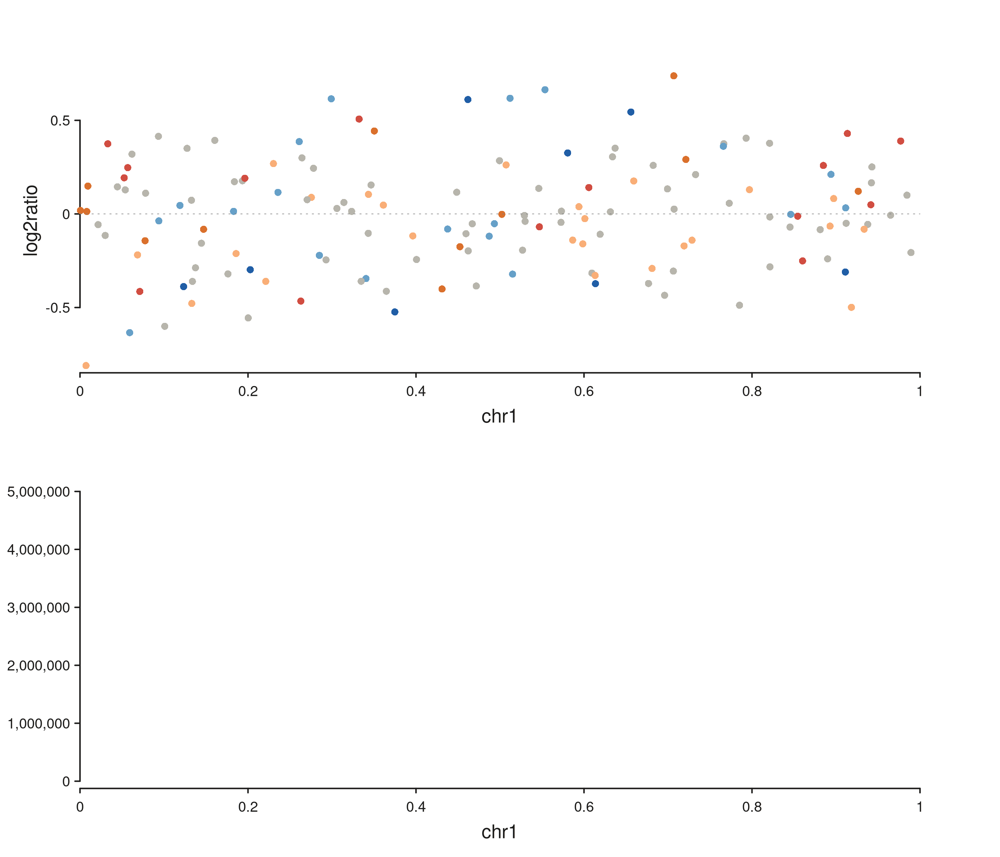

SeqPlotR ships a small family of wrapper functions that assemble
common genomic visualisations from the primitive elements. Each wrapper
returns a seq_plot that can be further composed with
%+%, %|%, %__%, or
[seq_resolve()].
library(SeqPlotR)
#>
#> Attaching package: 'SeqPlotR'
#> The following object is masked from 'package:base':
#>
#> %||%
library(GenomicRanges)
#> Loading required package: stats4
#> Loading required package: BiocGenerics
#> Loading required package: generics
#>
#> Attaching package: 'generics'
#> The following objects are masked from 'package:base':
#>
#> as.difftime, as.factor, as.ordered, intersect, is.element, setdiff,
#> setequal, union
#>
#> Attaching package: 'BiocGenerics'
#> The following objects are masked from 'package:stats':
#>
#> IQR, mad, sd, var, xtabs
#> The following objects are masked from 'package:base':
#>
#> anyDuplicated, aperm, append, as.data.frame, basename, cbind,
#> colnames, dirname, do.call, duplicated, eval, evalq, Filter, Find,
#> get, grep, grepl, is.unsorted, lapply, Map, mapply, match, mget,
#> order, paste, pmax, pmax.int, pmin, pmin.int, Position, rank,
#> rbind, Reduce, rownames, sapply, saveRDS, table, tapply, unique,
#> unsplit, which.max, which.min
#> Loading required package: S4Vectors
#>
#> Attaching package: 'S4Vectors'
#> The following object is masked from 'package:utils':
#>
#> findMatches
#> The following objects are masked from 'package:base':
#>
#> expand.grid, I, unname
#> Loading required package: IRanges
#> Loading required package: Seqinfo
seq_copynumber()
Single-sample CN scatter coloured by integer state, with optional segmentation overlay.
win <- GRanges(c("chr1", "chr2"), IRanges(c(1, 1), c(1e6, 1.5e6)))
cn_gr <- GRanges(
rep(c("chr1", "chr2"), each = 150),
IRanges(start = c(sample(1:1e6, 150), sample(1:1.5e6, 150)), width = 5000),
cn = sample(0:5, 300, replace = TRUE,
prob = c(.05, .1, .55, .15, .1, .05)),
log2ratio = rnorm(300, 0, 0.3)
)
seg <- GRanges(c("chr1", "chr2"),
IRanges(c(1, 1), c(1e6, 1.5e6)),
seg_mean = c(0.0, -0.3))
p <- seq_copynumber(cn_gr, windows = win,
segment_data = seg, segment_col = "seg_mean")
p$plot()
#> 5 out-of-bounds data points excluded! (seq_segment)
#> 5 out-of-bounds data points excluded! (seq_segment)
Column detection is automatic — cn_col falls back
through c("cn", "copy_number", "CN", "state", "integer_cn")
and ratio_col through
c("log2ratio", "logR", "log2R", "ratio", "log2_ratio").
seq_cn_heatmap()
Multi-sample CN heatmap — one row per sample, tiles coloured by CN state.
samples <- paste0("S", 1:5)
cnh_gr <- GRanges(
rep(c("chr1", "chr2"), each = 300),
IRanges(start = c(sample(1:1e6, 300, replace = TRUE),
sample(1:1.5e6, 300, replace = TRUE)), width = 5000),
sample = sample(samples, 600, replace = TRUE),
cn = sample(0:5, 600, replace = TRUE)
)
p <- seq_cn_heatmap(cnh_gr, windows = win,
sample_col = "sample", cn_col = "cn",
sample_order = samples)
p$plot()
seq_hic() — four styles
One call to seq_hic() produces one style. Combine styles
via seq_resolve() for side-by-side panels.
style = "rectangle"
Caps the distance axis at max_dist:
seq_hic(hic_gr, windows = win1, style = "rectangle", max_dist = 3e5)$plot()
style = "full" and "diagonal"
The full contact matrix lives on a 2D genomic grid:
seq_hic(hic_gr, windows = win1, style = "full")$plot()
seq_chip()
ChIP-style signal + peak tracks. data is either a named
list of GRanges (one per sample) or a single
GRanges with a sample column.
make_sig <- function(nm) {
g <- GRanges("chr1",
IRanges(sort(sample(1:1e6, 400)), width = 500),
score = rexp(400, rate = 0.15))
S4Vectors::mcols(g)$sample <- nm
g
}
sig <- list(Rad21 = make_sig("Rad21"), NippedB = make_sig("NippedB"))
peaks <- list(Rad21 = GRanges("chr1", IRanges(sort(sample(1:1e6, 20)), width = 2000)),
NippedB = GRanges("chr1", IRanges(sort(sample(1:1e6, 15)), width = 2000)))
p <- seq_chip(sig, peaks = peaks,
windows = GRanges("chr1", IRanges(1, 1e6)))
p$plot()
Composing wrappers with seq_resolve()
seq_resolve() is the key plumbing function for combining
wrapper plots — it extracts each child’s tracks and appends them to a
parent seq_plot under the requested direction.
win1 <- GRanges("chr1", IRanges(1, 1e6))
cn1 <- seq_copynumber(cn_gr[seqnames(cn_gr) == "chr1"],
windows = win1, track_id = "CN1")
hic <- seq_hic(hic_gr, windows = win1, style = "triangle",
track_id = "HiC")
fig <- seq_resolve(seq_plot(), cn1, hic)
fig$plot()
#> 5 out-of-bounds data points excluded! (seq_segment)
#> Warning in .merge_two_Seqinfo_objects(x, y): The 2 combined objects have no sequence levels in common. (Use
#> suppressWarnings() to suppress this warning.)Pass unique track_id values to each wrapper call to
avoid ID collisions when resolving multiple plots into one figure.